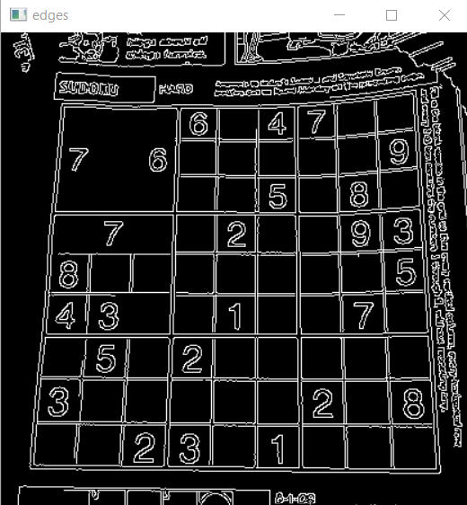
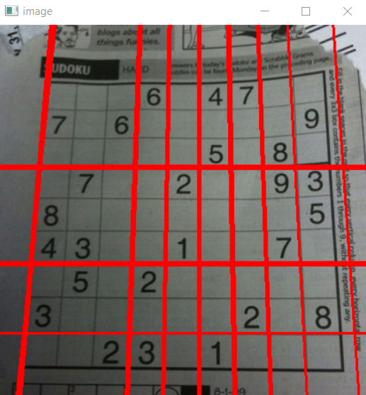

Hough Line Transform
Hough Transform is a popular technique to detect any shape, if you can represent that shape in mathematical form. It can detect the shape even if it is broken or distorted a little bit. We will see how it works for a line.A line can be represented as y = mx+c or in parametric form, as where p is the perpendicular distance from origin to the line, and \theta is the angle formed by this perpendicular line and horizontal axis measured in counter-clockwise ( That direction varies on how you represent the coordinate system. This representation is used in OpenCV).

Hough Tranform in OpenCV
Everything explained above is encapsulated in the OpenCV function, cv2.HoughLines(). First parameter, Input image should be a binary image, so apply threshold or use canny edge detection before finding applying hough transform. Second and third parameters are p and Q accuracies respectively. Fourth argument is the threshold, which means minimum vote it should get for it to be considered as a line. Remember, number of votes depend upon number of points on the line. So it represents the minimum length of line that should be detected.Code
1 2 3 4 5 6 7 8 9 10 11 12 13 14 15 16 17 18 19 20 21 22 23 24 25 26 27 28 | import cv2 import numpy as np img = cv2.imread('sudoku.jpg') gray = cv2.cvtColor(img, cv2.COLOR_BGR2GRAY) edges = cv2.Canny(gray, 50, 150, apertureSize=3) cv2.imshow('edges', edges) lines = cv2.HoughLines(edges, 1, np.pi / 180, 200) for line in lines: rho,theta = line[0] a = np.cos(theta) b = np.sin(theta) x0 = a * rho y0 = b * rho # x1 stores the rounded off value of (r * cos(theta) - 1000 * sin(theta)) x1 = int(x0 + 1000 * (-b)) # y1 stores the rounded off value of (r * sin(theta)+ 1000 * cos(theta)) y1 = int(y0 + 1000 * (a)) # x2 stores the rounded off value of (r * cos(theta)+ 1000 * sin(theta)) x2 = int(x0 - 1000 * (-b)) # y2 stores the rounded off value of (r * sin(theta)- 1000 * cos(theta)) y2 = int(y0 - 1000 * (a)) cv2.line(img, (x1, y1), (x2, y2), (0, 0, 255), 2) cv2.imshow('image', img) k = cv2.waitKey(0) cv2.destroyAllWindows() |
Output

Test the code with your own images
Completed Successfully.